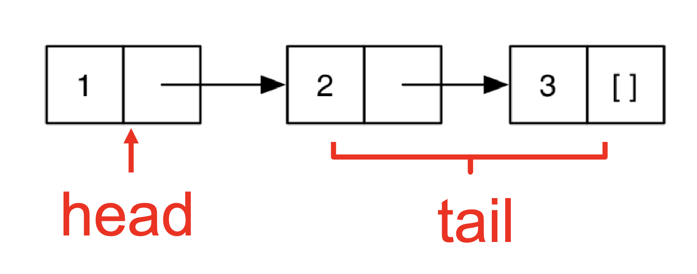

1 Functional Programming with OCaml
First-class functions
Functions can be data. We can send functions as parameters to other functions and return functions as return values.
Favor immutability (assign once)
Data types and pattern matching
Convenient for certain kinds of data structures
Type inference
OCaml is statically typed, but there is no need to write types in the source language
Supports parametric polymorphism, similar to Generics in Java, templates in C++
Exceptions
Garbage collection
1.1 Books
Developing Applications with Objective Caml https://caml.inria.fr/pub/docs/oreilly-book/ocaml-ora-book.pdf
Introduction to the Objective Caml Programming Language http://courses.cms.caltech.edu/cs134/cs134b/book.pdf
Real World OCaml 2nd Edition https://dev.realworldocaml.org/
OCaml from the Very Beginning https://johnwhitington.net/ocamlfromtheverybeginning/mlbook.pdf
Cornell cs3110 book https://cs3110.github.io/textbook/cover.html is another course which uses OCaml; it is more focused on programming and less on PL theory than this class is.
ocaml.org is the home of OCaml for finding downloads, documentation, etc. The tutorials are also very good and there is a page of books.
1.1.1 Similar Courses
If you’re interested, I’ve listed several similar courses from other universities. For example, Cornell offers a comparable course—CS 3110—and there are also similar offerings from the University of Washington, Princeton, Harvard, and UIUC. You can check out their websites; Cornell’s, in particular, provides an online textbook along with videos and other helpful resources.
You might find it helpful to watch their lectures, go through their examples, or even try out their projects or exams. They all use OCaml, and the course structure is quite similar.
So, it’s more than just a textbook—you have access to notes, slides, exams, and other useful materials.
CS3110 (Cornell)
CSE341 (Washington)
601.426 (Johns Hopkins)
COS326 (Princeton)
CS152 (Harvard)
CS421 (UIUC)
1.2 Installing OCaml
Install the latest version of OCaml from https://ocaml.org/
1.3 OPAM: OCaml Package Manager
ounit, a testing framework similar to minitest
utop, a top-level interface
dune, a build system for larger projects
1.4 Working with OCaml
OCaml programs can be compiled using ocamlc. It produces .cmo (compiled object) and {.cmi} (compiled interface) files. You can use -o to set output file name, and use -c to compile only to .cmo/.cmi and not to link. You can also compile with ocamlopt. It produces cmx files, which contain native code: faster, but not platform-independent (or as easily debugged)
1.5 Project Builds with dune
You use dune to compile projects. It automatically finds dependencies, invokes compiler and linker. Let us create a new project with dune:
shell
> dune init project HelloWorld Entering directory '/Users/anwar/git/2025Fall/CMSC330/cmsc330-notes/notes/code/HelloWorld' Success: initialized project component named HelloWorld Leaving directory '/Users/anwar/git/2025Fall/CMSC330/cmsc330-notes/notes/code/HelloWorld'
shell
> tree HelloWorld HelloWorld ├── _build │ └── log ├── bin │ ├── dune │ └── main.ml ├── dune-project ├── HelloWorld.opam ├── lib │ └── dune └── test ├── dune └── test_HelloWorld.ml 5 directories, 8 files
Build the project:
dune buildRun it:
dune exec bin/main.exe_build/default/main.exedune runtest1.6 OCaml Basics
A series of open statements for including other modules
A series of declarations for defining datatypes, functions, and constants
A series of (though often just one) toplevel expressions to evaluate.
OCaml REPL
(* A small OCaml program *) print_string "Hello world!\n";; # Hello world! - : unit = ()
OCaml REPL
open Printf let message = "Hello world";; (printf "%s\n" message);; # val message : string = "Hello world" # Hello world - : unit = ()
shell
> ocamlc hello.ml -o hello > ./hello Hello world!
(* main.ml *) let main () = print_int (Util.add 10 20); print_string "\n" let () = main ()
(* util.ml *) let add x y = x + y
Compile and run:
shell
> ocamlc util.ml main.ml -o main
Or compile separately
shell
> ocamlc -c util.ml > ocamlc util.cmo main.ml
shell
> ./main 30
1.7 OCaml toplevel, a REPL for OCaml
We will begin exploration of OCaml in the interactive top level. A top level is also called a read-eval-print loop (REPL) and it works like a terminal shell. To run the ocaml topleve, simply run ‘ocaml‘
% ocaml
OCaml version 5.2.0
# print_string "Hello world!
";;
Hello world!
- : unit = ()To load a ‘.ml‘ file into top level:
"#use "hello.ml"
Hello world!
- : unit = ()# exit 0;; |
1.8 First OCaml Example
OCaml REPL
(* A small OCaml program (* with nested comments *) *) let x = 37;; let y = x + 5;; print_int y;; # val x : int = 37 # val y : int = 42 # 42 - : unit = ()
OCaml REPL
print_int 10;; # 10 - : unit = ()
OCaml REPL
print_int 10.5;; # Line 1, characters 10-14: 1 | print_int 10.5;; ^^^^ Error: The constant "10.5" has type "float" but an expression was expected of type "int"
OCaml REPL
1 + 0.5;; # Line 1, characters 4-7: 1 | 1 + 0.5;; ^^^ Error: The constant "0.5" has type "float" but an expression was expected of type "int"
OCaml REPL
1 + true;; # Line 1, characters 4-8: 1 | 1 + true;; ^^^^ Error: The constructor "true" has type "bool" but an expression was expected of type "int"
OCaml REPL
print_int "This function expected an int";; # Line 1, characters 10-41: 1 | print_int "This function expected an int";; ^^^^^^^^^^^^^^^^^^^^^^^^^^^^^^^ Error: This constant has type "string" but an expression was expected of type "int"
1.9 Expressions
In OCaml, expressions are the fundamental building blocks of programs, and evaluating an expression always produces a value. Unlike many imperative languages, which distinguish between statements (actions) and expressions (values), OCaml is expression-oriented—almost everything in the language is an expression that yields a result.
Type checking rules (static semantics): produce a type or fail with an error message
Evaluation rules (dynamic semantics): produce a value or an exception or infinite loop. Evaluation rules are used only on expressions that type-check
We use metavariable e to designate an arbitrary expression.
1.10 Values
A value is an expression that is final. For example, 34 and true are values because we cannot evaluate them any further. On the contrary, 34+17 is an expression, but not a value because we can further evaluate it. Evaluating an expression means running it until it is a value. For example 34+17 evaluates to 51, which is a value. We use metavariable v to designate an arbitrary value
1.11 Types
Types classify expressions. It is the set of values an expression could evaluate to. Examples include ‘int‘, ‘bool‘, ‘string‘, and more. We use metavariable t to designate an arbitrary type. Expression e has type t if e will (always) evaluate to a value of type t. For example 0, 1, and -1 are values of type int while true has type bool. 34+17 is an expression of type int, since it evaluates to 51, which has type int. We usually write e : t to say e has type t. The process of determining e has type t is called type checking simply, typing.
1.12 if expression
The syntax of the if expression is
if e1 then e2 else e3We type check the if expression using the following type checking rules:
if e1 : bool and e2 : t and e3 : t then if e1 then e2 else e3 : tCondition must be a bool: The expression e1 (the condition) must have type bool. For example, writing if 1 then ... causes a type error, since 1 has type int, not bool.
Then- and Else-branches must have the same type: Both e2 and e3 must evaluate to values of the same type.
OCaml REPL
if 7 > 42 then "hello" else "goodbye";; # - : string = "goodbye"
OCaml REPL
if 7 > 42 then "hello" else 10;; # Line 1, characters 28-30: 1 | if 7 > 42 then "hello" else 10;; ^^ Error: The constant "10" has type "int" but an expression was expected of type "string"
Display fraction:
(if 10 > 5 then 100 else 200)OCaml REPL
print_int (if 10>5 then 100 else 200);; # 100 - : unit = ()
1.13 Functions
OCaml functions are like mathematical functions. They compute a result from provided arguments. We use ‘let‘ to define a function:
We now define the function next, which accepts an integer n and produces its successor.
OCaml REPL
let next n = n + 1;; next 10;; # val next : int -> int = <fun> # - : int = 11
OCaml REPL
let rec fact n = if n = 0 then 1 else n * fact (n-1);; fact 5;; # val fact : int -> int = <fun> # - : int = 120
1.13.1 Calling Functions (Function Application)
In OCaml, calling a function is very straightforward — you just write the function name followed by its arguments, separated by spaces (not commas, and no parentheses are required unless for grouping). The calling syntax is:
f e1 e2 … enOCaml REPL
let square x = x * x;; square 5;; # val square : int -> int = <fun> # - : int = 25
OCaml does not truly have “argumentless” functions. Instead, a nullary function is defined as one that takes the special value ( ) of type unit.
OCaml REPL
let greet () = "Hello";; greet ();; # val greet : unit -> string = <fun> # - : string = "Hello"
Locate the definition of f, i.e., let rec f x1 … xn = e.
Evaluate the arguments e1 … en to obtain values v1 … vn.
Substitute the values v1 … vn for the parameters x1 … xn in the function body e, yielding a new expression e’.
Evaluate e’ to value v, which is the final result
OCaml REPL
let rec fact n = if n = 0 then 1 else n * fact (n-1);; # val fact : int -> int = <fun>
expression |
| semantics |
fact 2 |
| substitute every occurence of n inside the body of fact with 2 |
if 2=0 then 1 else 2*fact(2-1) |
| evaluate the if expression |
2 * fact 1 |
| result of the else branch |
2 * (if 1=0 then 1 else 1*fact(1-1)) |
| substitute n with 1 |
2 * 1 * fact 0 |
| evaluate fact 0 |
2 * 1 * (if 0=0 then 1 else 0*fact(0-1)) |
| base case |
2 * 1 * 1 |
| |
2 |
|
1.13.2 Function Types
In OCaml, → is the function type constructor. Type t1 → t is a function with argument or domain type t1 and return or range type t. Type t1 → t2 → t is a function that takes two inputs, of types t1 and t2, and returns a value of type t.
1.13.3 Type Checking of Function application
As we have seen before, the syntax of a function application is
f e1 … enWe use the following type checking rule for the function application: If f : t1 → … → tn → u and e1 : t1, …, en : tn then the type of f e1 … en is u.
For example: the type of not true is bool because not : bool → bool and true : bool.
1.13.4 More Examples on Function Type Checking
OCaml REPL
let next x = x + 1;; # val next : int -> int = <fun>
OCaml REPL
let next x = x + 1;; next 10;; # val next : int -> int = <fun> # - : int = 11
OCaml REPL
let next x = x + 1;; next 10.5;; # val next : int -> int = <fun> # Line 1, characters 6-10: 1 | next 10.5;; ^^^^ Error: The constant "10.5" has type "float" but an expression was expected of type "int"
OCaml REPL
(* Swapping two values of a tuple (we will cover tuples later) *) let swap (x,y) = (y,x);; # val swap : 'a * 'b -> 'b * 'a = <fun>
OCaml REPL
(* Comparing other types *) let eq x y = x = y;; eq 1 2;; eq "hello" "hello";; # val eq : 'a -> 'a -> bool = <fun> # - : bool = false # - : bool = true
OCaml REPL
(* Adding two integers *) let add x y = x + y;; # val add : int -> int -> int = <fun>
OCaml REPL
let fn x = (int_of_float x) * 3;; # val fn : float -> int = <fun>
OCaml REPL
(* factorial function *) let rec fact n = if n = 0 then 1 else n * fact (n-1);; # val fact : int -> int = <fun>
OCaml REPL
(* Sum of the first n natural numbers *) let rec sum n = if n == 0 then 0 else n + sum (n-1);; # val sum : int -> int = <fun>
1.13.5 Mutually Recusrive Functions
Mutually recursive functions are functions that call each other (directly or indirectly). You define them using the and keyword along with let rec.
OCaml REPL
let rec odd n = if n == 0 then false else even(n-1) and even n = if n == 0 then true else odd(n-1);; # val odd : int -> bool = <fun> val even : int -> bool = <fun>
1.13.6 Polymorphic Types
This says the function takes a list of any element type ‘’a‘, and returns something of that same type. These are basically generic types in Java. ‘’a list‘ is like ‘List<T>‘.
OCaml REPL
let fst x y = x;; fst 1 "hello";; fst [1; 2] 1;; # val fst : 'a -> 'b -> 'a = <fun> # - : int = 1 # - : int list = [1; 2]
OCaml REPL
let eq x y = x = y;; eq 1 2;; eq "hello" "there";; eq "hello" 1;; # val eq : 'a -> 'a -> bool = <fun> # - : bool = false # - : bool = false # Line 1, characters 12-13: 1 | eq "hello" 1;; ^ Error: The constant "1" has type "int" but an expression was expected of type "string"
1.13.7 Type annotations
OCaml REPL
let (x : int) = 3;; # val x : int = 3
OCaml REPL
let fn (x:int):float = (float_of_int x) *. 3.14;; let add (x:int) (y:int):int = x + y;; # val fn : int -> float = <fun> # val add : int -> int -> int = <fun>
OCaml REPL
let id x = x;; # val id : 'a -> 'a = <fun>
OCaml REPL
let id (x:int) = x;; # val id : int -> int = <fun>
1.14 Lists
OCaml REPL
[];; [1; 2; 3; 4];; ["apple"; "banana"; "cherry"];; # - : 'a list = [] # - : int list = [1; 2; 3; 4] # - : string list = ["apple"; "banana"; "cherry"]
To evaluate [e1; e1;...;en], we evaluate e1 to a value v1, e2 to a value v2, and en to a value vn, and return [v1;…;vn].
In OCaml, the list notation [e1; e2] is syntactic sugar for using the cons operator ::(pronounced “cons”). :: constructs a list by prepending an element to an existing list. Specifically:
[e1; e2];; (* sugar syntax *)e1 :: e2 :: [];; (* desugared form *)OCaml REPL
let y = [1; 1+1; 1+1+1] ;; let x = 4::y ;; let z = 5::y ;; let m = "hello" :: "bob" ::[];; # val y : int list = [1; 2; 3] # val x : int list = [4; 1; 2; 3] # val z : int list = [5; 1; 2; 3] # val m : string list = ["hello"; "bob"]
1.14.1 Typing Lists
The type of an empty list [ ] is ’a list. The type of Cons is if e1 : t and e2 : t list then e1::e2 : t list. If we add parentheses for clarity: if e1 : t and e2 : (t list) then (e1::e2) : (t list).
OCaml REPL
let m = [[1];[2;3]];; # val m : int list list = [[1]; [2; 3]]
OCaml REPL
let y = 0::[1;2;3] ;; # val y : int list = [0; 1; 2; 3]
OCaml REPL
let x = [1;"world"] ;; (* all elements must have same type *) # Line 1, characters 11-18: 1 | let x = [1;"world"] ;; (* all elements must have same type *) ^^^^^^^ Error: This constant has type "string" but an expression was expected of type "int"
1.14.2 :: Operator
OCaml REPL
let y = 0::[1;2;3] ;; let w = [1;2]::y ;; (* error *) # val y : int list = [0; 1; 2; 3] # Line 1, characters 16-17: 1 | let w = [1;2]::y ;; (* error *) ^ Error: The value "y" has type "int list" but an expression was expected of type "int list list" Type "int" is not compatible with type "int list"
Yes. If the type of ‘y‘ is int list list,i.e., [1;2]::[[3;4]]. Each element of this list is an ‘int list‘.
Lists in Ocaml are Linked. [1;2;3] is represented as: 
The empty list [ ]
Or a pair consisting of an element and a list
This recursive structure will come in handy shortly
1.14.3 Lists of Lists
OCaml REPL
[ [9; 10; 11]; [5; 4; 3; 2] ];; # - : int list list = [[9; 10; 11]; [5; 4; 3; 2]]
The ype ‘int list list‘ can also be written as ‘(int list) list‘.
Lists are immutable in OCaml; you cannot change an element of a list. Instead, you create new lists from existing ones, for example using the :: operator.
1.15 Pattern Matching
To pull lists apart, we use the ‘match‘ construct. The pattern-matching part of the ‘match‘ is a sequence of clauses, each one of the form: pattern -> expr, separated by vertical bars (|). The clauses are processed in order, and only the ‘expr‘ of first matching clause is evaluated. The value of the entire match expression is the value of the ‘expr‘ of the matching clause; If no ‘pattern‘ matches ‘expr‘, your match is said to be ‘non-exhaustive‘ and when a match fails it raise the exception ‘Match_failure‘.
match e with
| p1 -> e1
| …
| pn -> enEach pattern pi must be a pattern of type t. (i.e., e and the patterns have same type)
Each branch expression ei must have the same type σ. So the whole match expression has type σ.
OCaml REPL
let neg x= match x with | true -> false | false -> true;; neg true;; neg (10 > 20);; # val neg : bool -> bool = <fun> # - : bool = false # - : bool = true
OCaml REPL
let is_zero n = match n with | 0 -> true | _ -> false ;; is_zero 1;; # val is_zero : int -> bool = <fun> # - : bool = false
OCaml REPL
let is_odd x = match x mod 2 with 0 -> false | 1 -> true | _ -> raise (Invalid_argument "is_odd");; # val is_odd : int -> bool = <fun>
OCaml REPL
let imply v = match v with (true,true) -> true | (true,false) -> false | (false,true) -> true | (false,false) -> true;; # val imply : bool * bool -> bool = <fun>
OCaml REPL
let imply v = match v with (true,x) -> x | (false,x) -> true;; # val imply : bool * bool -> bool = <fun>
OCaml REPL
let is_vowel c = match c with ('a' | 'e' | 'i' | 'o' | 'u') -> true | _ -> false;; # val is_vowel : char -> bool = <fun>
OCaml REPL
let is_upper x = match x with 'A' .. 'Z' -> true | _ -> false;; # val is_upper : char -> bool = <fun>
In OCaml, the underscore _ in a match is a wildcard pattern. It is like the default in the switch statement. It matches anything, but doesn’t bind a variable to the value.
1.15.1 Pattern Matching Lists
[ ] represents the empty list.
h :: t (pronounced "head cons tail") represents a list with head element h and tail list t.
OCaml REPL
let is_empty l = match l with | [] -> true | h::t -> false;; is_empty [];; is_empty [1;2;3];; # val is_empty : 'a list -> bool = <fun> # - : bool = true # - : bool = false
- matches lists with at least one element. For example:
a::bmatches and binds ‘a‘ to ‘1‘ and ‘b‘ to ‘[2;3]‘match [1;2;3] with |a::b - matches lists with exactly one element. For example:
a::[]binds ‘a‘ to ‘1‘. we could also write pattern a::[] as [a]match [1] with | a::[] - matches lists with exactly two elements. For example:
a::b::[]binds ‘a‘ to 1 and ‘b‘ to 2. We could also write pattern a::b::[] as [a;b]match [1;2] with |a::b::[] - matches lists with bold{at least three elements}. For example:
a::b::c::dbinds ‘a‘ to ‘1‘, ‘b‘ to ‘2‘, ‘c‘ to ‘3‘, and ‘d‘ to ‘[]‘.match [1;2;3] with |a::b::c::d
OCaml can detect non-exhaustive patterns and warn you about them. For example:
let hd l = match l with (h::_) -> h;;
Warning: this pattern-matching is not exhaustive.
Here is an example of a value that is not matched: []
# hd [];;Therefore, You can’t forget a case because compiler issues inexhaustive pattern-match warning. You can’t duplicate a case because compiler issues unused match case warning. Pattern matching leads to elegant, concise, beautiful code .
Quiz: Can write pattern as [a;b;c]::d (why?)
An underscore _ is a wildcard pattern. It matches anything, but doesn’t add any bindings. It is useful to hold a place but discard the value i.e., when the variable does not appear in the branch expression.
In the earlier examples, many values of h or t were unused. In such cases, we can replace them with the wildcard _. For example, in the is_empty, the h and t bindings are unused. We can replace them with _.
OCaml REPL
(* cehck if a list is empty *) let is_empty l = match l with | [] -> true | _::_ -> false;; is_empty [];; is_empty [1;2;3];; is_empty ["a"; "b"; "c"] # val is_empty : 'a list -> bool = <fun> # - : bool = true # - : bool = false # Line 1, characters 25-25: Error: Syntax error #
OCaml REPL
let rec sum l = match l with [] -> 0 | (h::t) -> h + (sum t);; sum [1;2;3;4];; # val sum : int list -> int = <fun> # - : int = 10
The sum function works only for int lists, but the is_empty function works for any type of list. OCaml gives such functions polymorphic types.
is_empty : 'a list -> bool1.15.2 Pattern Matching – An Abbreviation
let f x = match x with p -> elet f p = eOCaml REPL
let fst pair = match pair with | (x, _) -> x;; # val fst : 'a * 'b -> 'a = <fun>
OCaml REPL
let fst (x, _) = x;; # val fst : 'a * 'b -> 'a = <fun>
let f x = match x with ...let f = functionOCaml REPL
let f x = match x with | 0 -> "zero" | 1 -> "one" | _ -> "many";; # val f : int -> string = <fun>
OCaml REPL
let f = function | 0 -> "zero" | 1 -> "one" | _ -> "many";; # val f : int -> string = <fun>
1.16 Lists and Recursion
OCaml REPL
let rec length l = match l with |[] -> 0 | (_::t) -> 1 + (length t);; length [1;3;6;9];; # val length : 'a list -> int = <fun> # - : int = 4
The length of the empty list is zero
The length of a nonempty list is 1 plus the length of the tail.
OCaml REPL
let rec negate l = match l with [] -> [] | (h::t) -> (-h) :: (negate t);; negate [1;2;-10];; # val negate : int list -> int list = <fun> # - : int list = [-1; -2; 10]
OCaml REPL
let rec last l = match l with | []->[] | [x] -> [x] | (h::t) -> last t;; last [];; last [1;2;3;4];; # val last : 'a list -> 'a list = <fun> # - : 'a list = [] # - : int list = [4]
OCaml REPL
let rec append l m = match l with [] -> m | (h::t) -> h::(append t m);; append [1;2;3] [4;5;6];; (* Reversing a list *) let rec rev l = match l with [] -> [] | (h::t) -> append (rev t) [h];; rev [1;2;3;4];; # val append : 'a list -> 'a list -> 'a list = <fun> # - : int list = [1; 2; 3; 4; 5; 6] # val rev : 'a list -> 'a list = <fun> # - : int list = [4; 3; 2; 1]
OCaml REPL
let rec rev_helper l a = match l with [] -> a | (x::xs) -> rev_helper xs (x::a);; let rev l = rev_helper l [];; rev [1;2;3;4];; # val rev_helper : 'a list -> 'a list -> 'a list = <fun> # val rev : 'a list -> 'a list = <fun> # - : int list = [4; 3; 2; 1]
rev [1; 2; 3] →
rev_helper [1;2;3] [] →
rev_helper [2;3] [1] →
rev_helper [3] [2;1] →
rev_helper [] [3;2;1] →
[3;2;1]OCaml REPL
let rec member lst x= match lst with |[]->false |h::t->if h = x then true else member t x ;; # val member : 'a list -> 'a -> bool = <fun>
OCaml REPL
let rec merge l1 l2 = match l1,l2 with [],l->l |l,[]->l |(h1::t1, h2::t2)-> if h1 < h2 then h1::merge t1 l2 else h2::merge l1 t2;; merge [1;3;7;9] [2;3;4;5;6];; # val merge : 'a list -> 'a list -> 'a list = <fun> # - : int list = [1; 2; 3; 3; 4; 5; 6; 7; 9]
OCaml REPL
let rec insert x l= match l with |[]->[x] |h::t->if x < h then x::h::t else h::insert x t;; insert 10 [5;9;20;30];; # val insert : 'a -> 'a list -> 'a list = <fun> # - : int list = [5; 9; 10; 20; 30]
OCaml REPL
let rec insert x l= match l with |[]->[x] |h::t->if x < h then x::h::t else h::insert x t;; let rec sort l = match l with []->[] |[x]->[x] |h::t->insert h (sort t);; sort [1;6;2;10;-5];; # val insert : 'a -> 'a list -> 'a list = <fun> # val sort : 'a list -> 'a list = <fun> # - : int list = [-5; 1; 2; 6; 10]
let rec qsort = function
| [] -> []
| pivot :: rest ->
let left, right = List.partition (fun x-> x < pivot) rest in
qsort left @ [pivot] @ qsort right;;
OCaml REPL
(** split list a into two even parts *) let split a = let rec aux lst b c = match lst with [] -> (b, c) | hd :: tail -> aux tail c (hd :: b) in aux a [] [];; (* merge lists xs and ys *) let rec merge cmp xs ys = match (xs, ys) with ([], []) -> [] | (_, []) -> xs | ([], _) -> ys | (xhd :: xtail, yhd :: ytail) -> if (cmp xhd yhd) then xhd :: (merge cmp xtail ys) else yhd :: (merge cmp xs ytail);; let rec mergesort cmp os = match os with [] -> [] | [x] -> [x] | _ -> let (ls, rs) = split os in merge cmp (mergesort cmp ls) (mergesort cmp rs);; let lt a b = a < b;; mergesort lt [1;6;2;10;-5];; # val split : 'a list -> 'a list * 'a list = <fun> # val merge : ('a -> 'a -> bool) -> 'a list -> 'a list -> 'a list = <fun> # val mergesort : ('a -> 'a -> bool) -> 'a list -> 'a list = <fun> # val lt : 'a -> 'a -> bool = <fun> # - : int list = [-5; 1; 2; 6; 10]
1.17 Let Expressions
In OCaml, a let expression binds a name to a value. Its general form is:
let x = e1 in e2x is the bound variable
e1 is the binding expression
e2 is the body expression in which the binding is visible.
Evaluate e1 to v1
Substitute v1 for x in e2, yielding new expression e2’
Evaluate e2’ to v2, the final result
let x = 20 + 1 in x + x
let x = 21 in x + x (* evaluate e1, 20+1 ==> 21)
21 + 21 (* Substitute 21 for x in e2 *)
42If e1 : t1 and if assuming x : t1 implies e2 : t then (let x = e1 in e2) : t
1.17.1 Let Definitions vs. Let Expressions
OCaml REPL
let pi = 3.14;; (* pi is now bound in the rest of the top-level scope *) # val pi : float = 3.14 #
e;;let _ = e;;OCaml REPL
let x = 37;; let y = x + 5;; print_int y;; print_string "\n";; # val x : int = 37 # val y : int = 42 # 42- : unit = () # - : unit = ()
1.17.2 Let Expressions: Scope
OCaml REPL
let pi = 3.14 in pi *. 3.0 *. 3.0;; print_float pi;; # - : float = 28.259999999999998 # Line 1, characters 13-15: 1 | print_float pi;; ^^ Error: Unbound value "pi"
{
float pi = 3.14;
pi * 3.0 * 3.0;
}
pi; /* pi unbound! */
x;; (* Unbound value x *)
let x = 1 in x + 1;; (* 2 *)
let x = x in x + 1;; (* Unbound value x *)
let x = 1 in x + 1 + x ;; (* 3 *)
(let x = 1 in x + 1) ;; x;; (* Unbound value x *)
let x = 4 in (let x = x + 1 in x)
let x = 4 + 1 in x
let x = 5 in x
51.17.3 Nested Let Expressions
OCaml REPL
let res = (let area = (let pi = 3.14 in let r = 3.0 in pi *. r *. r) in (* pi and r are not visble here *) area /. 2.0);; (* area is not visible here *) # val res : float = 14.129999999999999 #
float res;
{ float area;
{ float pi = 3.14
float r = 3.0;
area = pi * r * r;
} // p and r are not visible here.
res = area / 2.0;
} // area is not visible hereOCaml REPL
let res = (let area = (let pi = 3.14 in let r = 3.0 in pi *. r *. r) in area /. 2.0);; # val res : float = 14.129999999999999
OCaml REPL
let res = let pi = 3.14 in let r = 3.0 in let area = pi *. r *. r in area /. 2.0;; # val res : float = 14.129999999999999
1.17.4 Let Expressions in Functions
OCaml REPL
let area d = let pi = 3.14 in let r = d /. 2.0 in let square x = x *. x in pi *. (square r);; area 10.0;; # val area : float -> float = <fun> # - : float = 78.5
1.17.5 Shadowing Names
int i;
void f(float i) {
{
char *i = NULL;
... // Here i refer to the inner character variable.
} // Here, i refers to the global integer variable
}
let x = 3+4 in let x = 3*x in x+1
let x = 7 in let x = 3*x in x+1
let x = 3*7 in x+1
let x = 21 in x+1
21+1
22OCaml REPL
let x = 10 in (let x = x*2 in x * x);; (* inner x shadows the outer x. It is same as *) let x = 10 in (let y = x*2 in y * y);; # - : int = 400 # - : int = 400
1.18 Tuples
A tuple is an ordered sequence of n values written in parenthesis and separated by commas as (e1, e2, ..., en). For instance, (330, "hello", true) is a 3-tuple that contains the integer ‘42‘ as its first component, the string ‘"hello"‘ as its second component, and the boolean value ‘true‘ as its third component. () denotes the empty tuple with ‘0‘ element. It is called unit in OCaml.
(1, 2) : (int * int)
(1, "string", 3.5) : int * string * float
(1, ["a"; "b"], 'c') :int * string list * char
[(1,2)] : (int * int) list
[(1, 2); (3, 4)] :(int * int) listOCaml REPL
let foo x = match x with (a, b) -> a + b |(a, b, c) -> a + b + c;; # Line 4, characters 5-14: 4 | |(a, b, c) -> a + b + c;; ^^^^^^^^^ Error: This pattern matches values of type "'a * 'b * 'c" but a pattern was expected which matches values of type "'d * 'e"
1.18.1 Pattern Matching Tuples
OCaml REPL
let plus3 t = match t with (x, y, z) -> x + y + z;; plus3(1,2,3);; # val plus3 : int * int * int -> int = <fun> # - : int = 6
OCaml REPL
let plus3' (x, y, z) = x + y + z;; plus3'(1,2,3);; # val plus3' : int * int * int -> int = <fun> # - : int = 6
OCaml REPL
let addOne (x, y, z) = (x+1, y+1, z+1);; addOne(10,20,30);; # val addOne : int * int * int -> int * int * int = <fun> # - : int * int * int = (11, 21, 31)
OCaml REPL
let sum ((a, b), c) = (a+c, b+c);; sum ((1, 2), 3) = (4, 5);; # val sum : (int * int) * int -> int * int = <fun> # - : bool = true
OCaml REPL
let plusFirstTwo (x::y::_, a) = (x + a, y + a);; plusFirstTwo ([1; 2; 3], 4) = (5, 6);; # Line 1, characters 17-29: 1 | let plusFirstTwo (x::y::_, a) = (x + a, y + a);; ^^^^^^^^^^^^ Warning 8 [partial-match]: this pattern-matching is not exhaustive. Here is an example of a case that is not matched: (x::[], _) val plusFirstTwo : int list * int -> int * int = <fun> # - : bool = true
OCaml REPL
let tls (_::xs, _::ys) = (xs, ys);; tls ([1; 2; 3], [4; 5; 6; 7]) = ([2; 3], [5; 6; 7]);; # Line 1, characters 8-22: 1 | let tls (_::xs, _::ys) = (xs, ys);; ^^^^^^^^^^^^^^ Warning 8 [partial-match]: this pattern-matching is not exhaustive. Here is an example of a case that is not matched: (_::xs, []) val tls : 'a list * 'b list -> 'a list * 'b list = <fun> # - : bool = true
1.19 Records
type <record-name> =
{ <field> : <type>;
<field> : <type>;
...
}OCaml REPL
type date = { month: string; day: int; year: int } (* Now, we can define a record: *) let today = { day = 16; year = 2017; month = "f" ^ "eb" };; # type date = { month : string; day : int; year : int; } val today : date = {month = "feb"; day = 16; year = 2017}
print_string today.month;; (* prints feb *)OCaml REPL
type date = { month: string; day: int; year: int } let f x = match x with {year; day; month}-> Printf.printf "%d\t%s\t%d\n" year month day;; f {year=2024;day=6;month="Feb"};; # type date = { month : string; day : int; year : int; } val f : date -> unit = <fun> # 2024 Feb 6 - : unit = ()
OCaml REPL
type date = { month: string; day: int; year: int } let f x = match x with {year=y; day=d; month=m} -> Printf.printf "%d\t%s\t%d\n" y m d;; f {year=2024;day=6;month="Feb"};; # type date = { month : string; day : int; year : int; } val f : date -> unit = <fun> # 2024 Feb 6 - : unit = ()
let f3 {year; day; month} = Printf.printf "%d %s %d
" year month day
let f {year =y; day=d; month=m} = Printf.printf "%d %s %d
" y m dOCaml REPL
type date = { month: string; day: int; year: int } let today = {year=2023;day=6;month="Feb"};; let {year; day; month} = today in Printf.printf "%d\t%s\t%d\n" year month day;; let {year =y; day=d; month=m} = today in Printf.printf "%d\t%s\t%d\n" y m d;; # type date = { month : string; day : int; year : int; } val today : date = {month = "Feb"; day = 6; year = 2023} # 2023 Feb 6 - : unit = () # 2023 Feb 6 - : unit = ()
OCaml REPL
type date = { month: string; day: int; year: int } let today = {year=2023;day=6;month="Feb"};; let {year} = today in Printf.printf "%d\n" year;; let {year =y; day=d} = today in Printf.printf "%d\t%d\n" y d;; # type date = { month : string; day : int; year : int; } val today : date = {month = "Feb"; day = 6; year = 2023} # 2023 - : unit = () # 2023 6 - : unit = ()
Quiz: What is the type of shift?
type point = {x:int; y:int}
let shift { x=px } = [px]::[]1.20 Anonymous Functions
OCaml REPL
fun x -> x + 3;; # - : int -> int = <fun>
OCaml REPL
(fun x -> x + 3) 5;; # - : int = 8
(fun x y -> x) 2 3OCaml REPL
(fun x y -> x) 2 3;; # - : int = 2
1.20.1 Functions and Binding
OCaml REPL
let f x = x + 3;; let g = f;; g 5;; # val f : int -> int = <fun> # val g : int -> int = <fun> # - : int = 8
let next x = x + 1let next = fun x -> x + 1and,
let plus x y = x + ylet plus = fun x y -> x + yQuiz: What does this evaluate to?
let f = fun x -> 0 in
let g = f in
let h = fun y -> g (y+1) in
h 1;;
h 1
(fun y -> g (y+1)) 1
g (1+1)
g 2
f 2
(fun x -> 0) 2
0